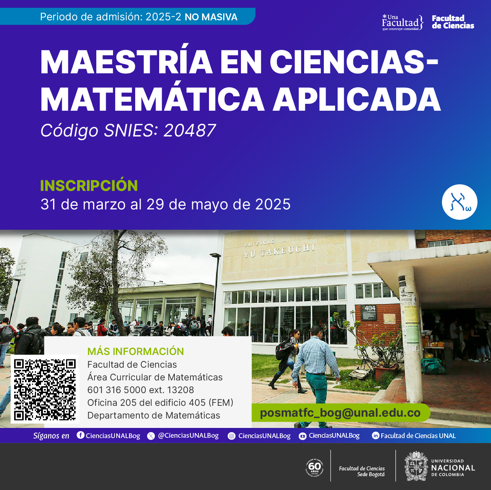

I am the head of the Master of Sciences in Applied Mathematics within the Department of Mathematics at UNAL Bogota.
I was awarded as Dr.rer.nat from TU Kaiserslautern (renamed in 2023 to RPTU) in 2021 under the supervision of Claudia Redenbach and Katja Schladitz. I was supported by a scholarship of the DAAD: German Academic Exchange Service and the Institute Fraunhofer for Industrial and Applied Mathematics (ITWM), where I was a member of the department of image processing.
Also, I have an EngD from TU/e in Industrial Mathematics in 2016, and I obtained my BSc and MSc degrees in Mathematics and Applied Mathematics in 2009 and 2012 from Department of Mathematics at UNAL Bogota. My research interests are in quantum computing, artificial intelligence, image processing, and numerical analysis.
Learn more about our research activities, team members, and ongoing projects.
Visit Research Group Pagedgroldanj at unal.edu.co
Head of M.Sc. »Applied Mathematics«
Department of Mathematics
National University of Colombia
Cra 45 # 26-85
Oficce 323, Yu Takeuchi building
Bogotá,
Colombia
2024-1
Are you ready to shape the future of technology, finance, and science? Apply now for our Master's in Applied Mathematics and unlock endless career opportunities in cutting-edge fields such as AI, machine learning, data science, and mathematical modeling.
